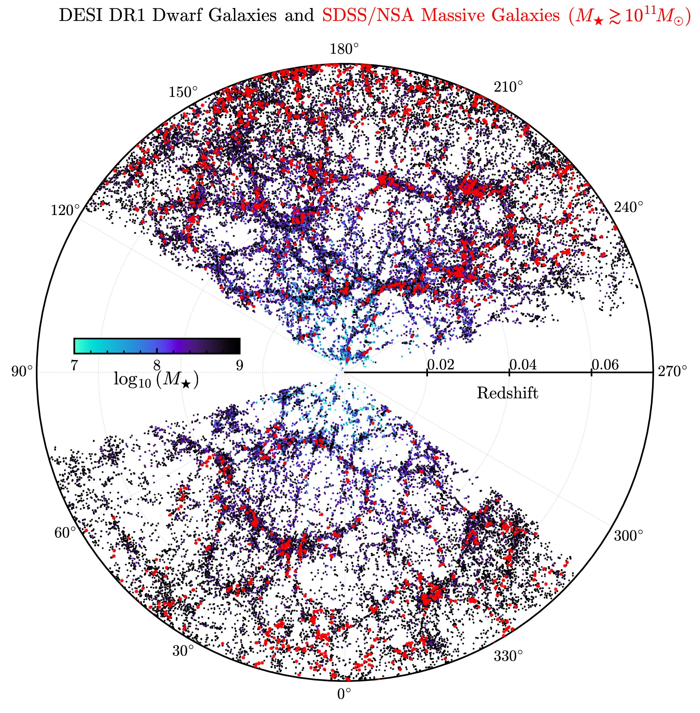
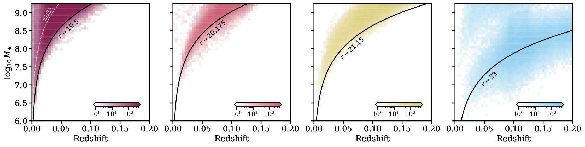
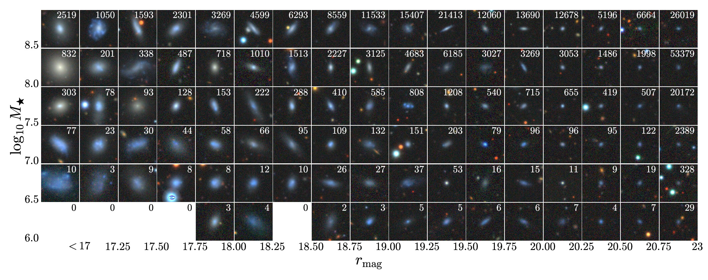
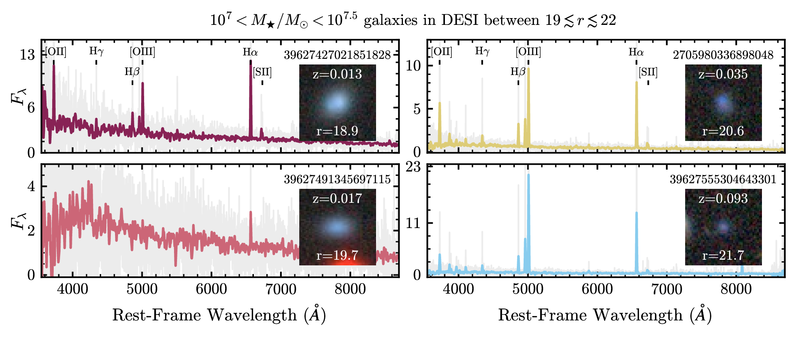

DESI Extragalactic Dwarf Galaxy Catalog
Welcome to the web portal.
Explore the interactive search tool, visualize galaxy cutouts and spectra, or learn more about the dataset.
Maintained by Viraj Manwadkar — questions welcome at virajvm [at] stanford [dot] edu
Catalog summary




Acknowledgements
This catalog builds on data from the Dark Energy Spectroscopic Instrument (DESI). DESI is the product of an international collaboration that brings together more than 450 researchers from more than 70 institutions including Australia, Canada, China, Colombia, France, Germany, Korea, Mexico, Spain, Switzerland, the U.K., and the U.S. The collaboration is led by Lawrence Berkeley National Laboratory, which is managed by the University of California for the U.S. Department of Energy's Office of Science. DESI is located at Kitt Peak National Observatory near Tucson, Arizona. Kitt Peak is part of the NSF's National Optical-Infrared Astronomy Research Laboratory (NSF's OIR Lab).
The DESI scientists are honored to be permitted to conduct astronomical research on Iolkam Du'ag (Kitt Peak), a mountain with particular significance to the Tohono O'odham Nation.
Imaging cutouts in this portal are retrieved from the Legacy Surveys. Learn more about DESI and the Legacy Surveys.
DESI
This research used data obtained with the Dark Energy Spectroscopic Instrument (DESI). DESI construction and operations is managed by the Lawrence Berkeley National Laboratory. This material is based upon work supported by the U.S. Department of Energy, Office of Science, Office of High-Energy Physics, under Contract No. DE–AC02–05CH11231, and by the National Energy Research Scientific Computing Center, a DOE Office of Science User Facility under the same contract. Additional support for DESI was provided by the U.S. National Science Foundation (NSF), Division of Astronomical Sciences under Contract No. AST-0950945 to the NSF's National Optical-Infrared Astronomy Research Laboratory; the Science and Technology Facilities Council of the United Kingdom; the Gordon and Betty Moore Foundation; the Heising-Simons Foundation; the French Alternative Energies and Atomic Energy Commission (CEA); the National Council of Humanities, Science and Technology of Mexico (CONAHCYT); the Ministry of Science and Innovation of Spain (MICINN), and by the DESI Member Institutions.
Any opinions, findings, and conclusions or recommendations expressed in this material are those of the author(s) and do not necessarily reflect the views of the U.S. National Science Foundation, the U.S. Department of Energy, or any of the listed funding agencies.
DESI Legacy Imaging Surveys
The DESI Legacy Imaging Surveys consist of three individual and complementary projects: the Dark Energy Camera Legacy Survey (DECaLS), the Beijing-Arizona Sky Survey (BASS), and the Mayall z-band Legacy Survey (MzLS). DECaLS, BASS and MzLS together include data obtained, respectively, at the Blanco telescope, Cerro Tololo Inter-American Observatory, NSF's NOIRLab; the Bok telescope, Steward Observatory, University of Arizona; and the Mayall telescope, Kitt Peak National Observatory, NOIRLab. NOIRLab is operated by the Association of Universities for Research in Astronomy (AURA) under a cooperative agreement with the National Science Foundation. Pipeline processing and analyses of the data were supported by NOIRLab and the Lawrence Berkeley National Laboratory (LBNL). Legacy Surveys also uses data products from the Near-Earth Object Wide-field Infrared Survey Explorer (NEOWISE), a project of the Jet Propulsion Laboratory/California Institute of Technology, funded by the National Aeronautics and Space Administration. Legacy Surveys was supported by: the Director, Office of Science, Office of High Energy Physics of the U.S. Department of Energy; the National Energy Research Scientific Computing Center, a DOE Office of Science User Facility; the U.S. National Science Foundation, Division of Astronomical Sciences; the National Astronomical Observatories of China, the Chinese Academy of Sciences and the Chinese National Natural Science Foundation. LBNL is managed by the Regents of the University of California under contract to the U.S. Department of Energy. The complete acknowledgments can be found at legacysurvey.org/acknowledgment.